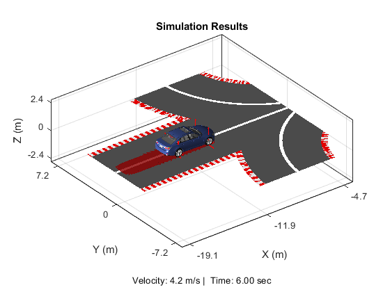
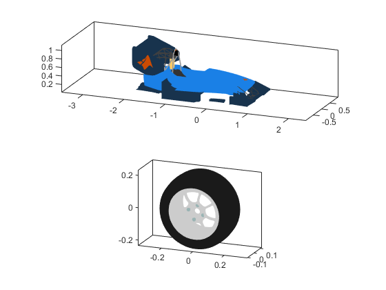
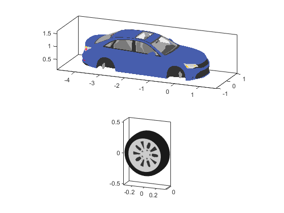
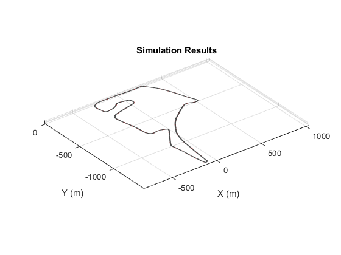

Vehicle Simulation Results Plotter
The Vehicle Simulation Results Plotter helps you visualize results from simulations in a 3D plot with visual elements that provide context for the numerical results. The results plotter is accessible via a MATLAB App or from the MATLAB Command Line. It can be used to provide static plots or animations of portions of simulation results.
Contents
Vehicle Simulation Results Plotter App
The Vehicle Simulation Results Plotter App lets you plot simulation results from full vehicle simulations. The options on the right side configure which visual elements should be included in the plot.
- Results to Plot, Workspace: Simulation results will be extracted from the variable specified in the field below. Selecting this option enables the "Save" button, which you can use to save the current results to a file for later replay.
- Results to Plot, File: Simulation results will be extracted from the variable specified in the field below. Selecting this option enables the "Select" button where you can select a file with simulation results.
- Scene: Select the scene for the plot (road surface). If "from workspace/file" is selected, the scene will be derived from variables in the workspace or the .mat file. Otherwise, the selected scene will be used.
- Body: Select the vehicle chassis to show in the results plot.
- Plot Elements, Vehicle Body: Add vehicle body to plot
- Plot Elements, Tire Forces: Add arrows for tire vertical, longitudinal, and lateral forces to plot
- Plot Elements, Patch: Mark path using "shadow" of chassis
- Plot Elements, 3D View: Show results in 3D plot
- Plot Elements, View Width: Length of scene along x and y axes in figure window
- Time, Start: Start time for results to display
- Time, Stop: Stop time for results to display. If higher than start, results will be animated.
- Time, Interpolate Results: If checked, results will be interpolated by "Step Size". This is useful for animations. If not checked, only logged simulation results will be shown.
- Time, % of Event: Position of slider selects time instant for the plot
- Show Results: Plot or animate results during the time frame between start and stop time
- Save GIF: Open a new figure window, animate the results between start and stop time and save to a .gif file. You are asked for a file name and location to save the file.
Command Line Usage
Plots can be created within the app or in a separate figure window. As you use the App, commands are echoed to the command window that will produce the same plot or animation in a separate figure window. Simply copy/paste the displayed command to produce a plot. You can look at the code to understand what the input arguments are for sm_car_plot3d_create.m
figure(5);cla;axCurr = gca;sm_car_plot3d_create('simRes_SKP_Sedan.mat','Sedan','(from workspace/file)',16,1,1,1,1,0.1,5,6, axCurr,0);
Visual Elements: Vehicle, Wheel
The code used to create the plot expects a specific data structure containing the colors, opacities, vertices, and faces to represent the vehicle body and wheels. See sm_car_plot3d_plot_patches.m for more details on the data structure. You can use that function to plot the provided vehicle and wheel data to see how it positioned and oriented. With this information, you can look into adding your own visual elements.
load('VehVisDataFSAE.mat')
sm_car_plot3d_plot_patches(vehiclePatchData)
 load('VehVisDataSedan.mat')
sm_car_plot3d_plot_patches(vehiclePatchData)
 Simulation Results Data
The Vehicle Simulation Results Plotter can be used to visualize data from any vehicle simulation as long as it provides the correct data in the correct format. Code has been provided to extract the necessary data from the simulation results of the Simscape Vehicle Templates. By examining the code we have provided, you can extract data from other simulations and visualize them using this code.
- Extract data from simulation results: sm_car_plot3d_get_data.m
- Save data for plot to .mat file: sm_car_plot3d_save_data.m
Road Data
The visual element for the road can be specified in several ways. The easiest method is to simply specify the centerline and the width. The centerline is a nx3 matrix for x-y-z coordinates, the width is simply a scalar value for the road. Additional options are available, please look at sm_car_plot3d_plot_road.m for more options.
figure(10);fig_h = gca;sm_car_plot3d_plot_road(Scene.CRG_Hockenheim.Geometry.centerline.xyz, Scene.CRG_Hockenheim.Geometry.w,fig_h);
close all